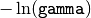

bayesian_blocks¶
-
astropy.stats.bayesian_blocks(t, x=None, sigma=None, fitness='events', **kwargs) [edit on github][source]¶ Compute optimal segmentation of data with Scargle’s Bayesian Blocks
This is a flexible implementation of the Bayesian Blocks algorithm described in Scargle 2012 [R21].
Parameters: t : array_like
data times (one dimensional, length N)
x : array_like (optional)
data values
sigma : array_like or float (optional)
data errors
fitness : str or object
the fitness function to use for the model. If a string, the following options are supported:
- ‘events’ : binned or unbinned event data. Arguments are
gamma, which gives the slope of the prior on the number of bins, orncp_prior, which is . - ‘regular_events’ : non-overlapping events measured at multiples of a
fundamental tick rate,
dt, which must be specified as an additional argument. Extra arguments arep0, which gives the false alarm probability to compute the prior, orgamma, which gives the slope of the prior on the number of bins, orncp_prior, which is . - ‘measures’ : fitness for a measured sequence with Gaussian errors.
Extra arguments are
p0, which gives the false alarm probability to compute the prior, orgamma, which gives the slope of the prior on the number of bins, orncp_prior, which is .
In all three cases, if more than one of
p0,gamma, andncp_prioris chosen,ncp_priortakes precendence overgammawhich takes precedence overp0.Alternatively, the fitness parameter can be an instance of
FitnessFuncor a subclass thereof.**kwargs :
any additional keyword arguments will be passed to the specified
FitnessFuncderived class.Returns: edges : ndarray
array containing the (N+1) edges defining the N bins
See also
astropy.stats.histogram- compute a histogram using bayesian blocks
References
[R21] (1, 2) Scargle, J et al. (2012) http://adsabs.harvard.edu/abs/2012arXiv1207.5578S Examples
Event data:
>>> t = np.random.normal(size=100) >>> edges = bayesian_blocks(t, fitness='events', p0=0.01)
Event data with repeats:
>>> t = np.random.normal(size=100) >>> t[80:] = t[:20] >>> edges = bayesian_blocks(t, fitness='events', p0=0.01)
Regular event data:
>>> dt = 0.01 >>> t = dt * np.arange(1000) >>> x = np.zeros(len(t)) >>> x[np.random.randint(0, len(t), len(t) // 10)] = 1 >>> edges = bayesian_blocks(t, x, fitness='regular_events', dt=dt)
Measured point data with errors:
>>> t = 100 * np.random.random(100) >>> x = np.exp(-0.5 * (t - 50) ** 2) >>> sigma = 0.1 >>> x_obs = np.random.normal(x, sigma) >>> edges = bayesian_blocks(t, x_obs, sigma, fitness='measures')
- ‘events’ : binned or unbinned event data. Arguments are